رصدات مجرية محاكاة شاملة الأطوال الموجية من مشروع NIHAO
الملخص
نقدّم توزيعات طاقة طيفية (SEDs) لمجرات محاكاة تمتد من الأشعة فوق البنفسجية البعيدة إلى الأشعة تحت الحمراء البعيدة، أُنشئت باستخدام محاكيات هيدروديناميكية وحسابات نقل إشعاعي، وهي ملائمة للتحقق من تقنيات نمذجة SED. وتُعد نمذجة SED أداة أساسية لاستنتاج تواريخ تشكّل النجوم من رصدات المجرات القريبة، لكنها محفوفة بالصعوبات بسبب فهمنا غير المكتمل للتجمعات النجمية، وعمليات الإثراء الكيميائي، والتأثيرات غير الخطية المعتمدة على الهندسة التي يخلّفها الغبار في رصداتنا. وستتيح لنا توزيعات SED المحاكاة تقييم دقة هذه الاستنتاجات بمقارنتها بمجرات ذات حقيقة مرجعية معروفة. ولإنشاء توزيعات SED، نستخدم مجرات محاكاة من مجموعة NIHAO وبرنامج النقل الإشعاعي SKIRT. ونستكشف وصفات مختلفة للمعالجة اللاحقة دون الشبكية، مستخدمين توزيعات الألوان واعتمادها على نسبة محوري المجرات في الكون القريب لضبطها والتحقق منها. ونجد أن وصفات المعالجة اللاحقة دون الشبكية التي تخفف قيود الدقة الزمنية والمكانية للمحاكيات ضرورية لإنتاج قياسات ضوئية من FUV إلى FIR تعيد إحصائيا إنتاج ألوان المجرات في الكون القريب. ومع هذه الورقة نتيح قياسات ضوئية محلولة مكانيا وأطيافا مدمجة مكانيا لمجرات عينتنا، كل منها من مجال من زوايا الرؤية المختلفة. وتتنبأ محاكياتنا بوجود تباين كبير في قوانين التوهين بين المجرات، وبأن توازن الطاقة بين توهين الغبار وإعادة إصداره، من أي زاوية رؤية محددة، يمكن أن ينتهك بما يصل إلى عامل قدره 3. ومن المرجح أن تؤثر هذه السمات في دقة نمذجة SED.
1 المقدمة
يتطلب فهم موضعنا في الكون فك تاريخ المجرات عبر الزمن الكوني. تعرض هذه الورقة رصدات محاكاة لمجرات تأخذ في الحسبان امتصاص الغبار وتشتته وإصداره، لاختبار تقنيات نمذجة توزيع الطاقة الطيفية (SED) التي يستخدمها كثير من الباحثين لاستنتاج نمو المجرات وتطورها من الرصدات.
يسير بحث تطور المجرات في مسارين رئيسيين متكاملين: السجل الأثري للمجرات المنفردة عند الانزياح الأحمر صفر، ودراسات النظر إلى الماضي لكيفية تغير جمهرة المجرات مع الزمن. وتركز هذه الورقة على فهم السجل الأثري.
إن تفكيك تواريخ المجرات استنادا إلى رصدات الانزياح الأحمر صفر عبر نمذجة SED محفوف بالصعوبة والالتباس بسبب اللايقين في نمذجة تشكّل النجوم، والتطور النجمي، والبنية النجمية، والأغلفة الجوية النجمية، والتطور الكيميائي، والغبار (Conroy and Gunn, 2010; Conroy, 2013; Hayward and Smith, 2015; Lower et al., 2020). وفي هذه الورقة سنوفر محاكيات تساعدنا على فهم هذه اللايقينات على نحو أفضل، ولا سيما تلك المتعلقة بالغبار.
ومن الخواص المفيدة على نحو خاص للمجرة معدل تشكّل النجوم فيها (SFR)، إذ يخبرنا بمدى سرعة تحويل المجرة للغاز إلى نجوم. وبما أن التجمعات النجمية الفتية تصدر بقوة أكبر بكثير في الأشعة فوق البنفسجية (UV) من التجمعات الأقدم، فإن لمعان الأشعة UV المنبعث من النجوم يرتبط ارتباطا وثيقا بمعدل SFR للمجرة.
غير أن الغبار يمتص ويشتت ضوء UV على نحو تفضيلي قياسا بالأطوال الموجية الأعلى، ويميل إلى أن يكون قريبا من التجمعات النجمية حديثة التكوين (Salim and Narayanan, 2020). لذلك يكون لمعان UV المرصود عادة أقل بكثير من اللمعان المنبعث. ويُعرف اجتماع الامتصاص والتشتت الناجمين عن وسط مغبر بين الراصد ومصدر ضوئي باسم الإخماد، ويُعرف اعتماده على الطول الموجي بمنحنى الإخماد. ويعتمد منحنى الإخماد على توزيع أحجام حبيبات الغبار وتركيبها الكيميائي. أما الوسط المغبر ومصادر الضوء فهي متداخلة، لذلك تتعرض بعض المصادر في نظام حقيقي إلى إخماد أكبر من غيرها. وإضافة إلى ذلك، يمكن أن يشتت الغبار الفيض إلى خط البصر. وفي وجود جميع هذه التأثيرات، تُعرف نسبة الفيض الكلي المرصود إلى الفيض المنبعث باسم التوهين. وقد يختلف اعتماد التوهين على الطول الموجي عن منحنى الإخماد للوسط المغبر.
يمثل تصحيح التوهين مصدرا مهما للايقين في استنتاج SFR لمجرة ما. فمن مجرة إلى أخرى، وداخل المجرات، يوجد تباين في كمية الغبار، وفي منحنيات إخماد الغبار، وفي هندسة الغبار بالنسبة إلى النجوم. ويمكن لكل هذه الفروق أن تسبب تباينا كبيرا في منحنيات التوهين الكلية. وبطبيعة الحال لا توجد لدينا طريقة حقيقية لمعرفة منحنى التوهين الحقيقي لمجرة ما، لأننا لا نملك الوصول إلى الضوء المنبعث قبل تفاعله مع الغبار. وهذا الافتقار إلى حقيقة مرجعية يجعل اختبار دقة استنتاجات نمذجة SED من الرصدات وحدها أمرا مستحيلا.
ولاختبار قدرتنا على استنتاج الخواص الفيزيائية للمجرات من الرصدات، نحتاج إلى مجموعة بيانات تكون الحقيقة المرجعية فيها معروفة، ويمكننا منها اختبار استنتاجاتنا. والنهج الذي نتبعه هنا هو إجراء نقل إشعاعي على مجرات محاكاة لإنتاج قياسات ضوئية صورية تكون معاملاتها الفيزيائية الأساسية معروفة. وتنطوي هذه العملية على صعوباتها الخاصة، الناشئة من كثير من اللايقينات نفسها الموجودة في نمذجة SED، فضلا عن صعوبات مرتبطة بالدقة المكانية والزمنية المحدودة للمحاكيات.
وقد اتبعت عدة دراسات حديثة هذا النهج. يصف Camps et al. (2016) وTrayford et al. (2017) منهجية توليد قياسات ضوئية صورية لمجرات EAGLE (Crain et al., 2015; Schaye et al., 2015) ويقدمان مقارنات مع مجرات محلية من Herschel Reference Survey (Boselli et al., 2010). ويجدان اختلافات في علاقات اللون-اللون في نظام الأطوال الموجية –، مما يشير إلى أن الغبار المحاكى لا يجري تسخينه بما يكفي. ومحاكيات EAGLE (Schaye et al., 2015) لا تنمذج طور الغاز البارد في الوسط بين النجمي (ISM)، مما يؤدي إلى بنية كثافة غبار ملساء اصطناعيا يمكن أن ينتج عنها منحنيات توهين أقل رمادية. ويستخدم عمل ذو صلة أنجزه Trčka et al. (2020) المنهجية نفسها الموصوفة أعلاه مع مقارنة أكثر تفصيلا برصدات DustPedia، ويجد أن قياساتهم الضوئية الصورية لها لمعانات FUV وMIR أكبر باستمرار من المجرات المرصودة عند الكتلة النجمية نفسها. ويولّد Kapoor et al. (2021) قياسات ضوئية صورية لمجرات 30 من مشروع Auriga باستخدام منهجية مشابهة لمنهجية Trayford et al. (2017)، لكن مع بعض الاختلافات في المعالجة دون الشبكية لمناطق تشكّل النجوم. كما يستكشفون طريقتين مختلفتين لإسناد كتلة الغبار من الغاز بناء على درجة حرارة الغاز وكثافته. ومع أنهم يقارنون بعض ألوانهم الصورية بالرصدات، فإن المقارنات المعروضة محدودة النطاق إلى حد بعيد. فالوسط ISM في مجرات Auriga مفرط النعومة على مقاييس بضع مئات من الفراسخ الفلكية ولا يعيد إنتاج بنية الكثافة لوسط ISM متعدد الأطوار (Marinacci et al., 2019).
وكخطوة نحو حساب أدق لتأثيرات الغبار عند استنتاج تواريخ تشكّل النجوم، نجري نقلا إشعاعيا كاملا باستخدام برنامج النقل الإشعاعي مونت كارلو Stellar Kinematics Including Radiative Transfer (SKIRT) (Camps and Baes, 2020) على مجرات محاكاة من مشروع Numerical Investigation of Hundred Astrophysical Objects (NIHAO) (Wang et al., 2015b)، مولدين رصدات صورية تمتد من الأشعة فوق البنفسجية البعيدة (FUV) إلى الأشعة تحت الحمراء البعيدة (FIR). وبخلاف الأعمال السابقة الموصوفة أعلاه، فإن المجرات المحاكاة من مجموعة NIHAO تعيد إنتاج بنية كثافة وسط ISM متعدد الأطوار؛ ومع ذلك، يبقى التنعيم المكاني البالغ pc أكبر من البنى الموجودة في ISM المرصود.
نوسع الأعمال السابقة بتقديم مقارنة مفصلة بين رصداتنا الصورية والقياسات الضوئية المرصودة من الكون القريب في ظل طائفة من افتراضات النمذجة، ووصفات دون شبكية، واختيارات معاملات حرة. وستتاح القياسات الضوئية المحاكاة لاختياراتنا النهائية في النمذجة علنا كمنتج بيانات، وستوفر أساسا ممتازا لاختبار دقة SFHs المستنتجة من طرائق نمذجة SED.
في القسم 2 نصف محاكيات NIHAO، وفي القسم
3 نصف استخدامنا لبرنامج SKIRT في النقل الإشعاعي.
وفي القسم 4، نصف إجراء حساب نسب المحورين من صور حزمة r المحاكاة.
وفي القسم 5، نناقش كيف نضبط
معاملاتنا لإعادة إنتاج ألوان المجرات في UV والبصري وتحت الأحمر
واعتمادها على نسبة المحورين كما رُصدت في DustPedia.
وفي القسم 6، نعرض نتائج ألوان المجرات
واعتمادها على نسبة المحورين، ومنحنيات التوهين الناتجة. وفي القسم 6.6، نلفت الانتباه بوجه خاص إلى اختلالات الطاقة الظاهرية التي يمكن أن تسببها
هندسات المجرات الواقعية بين توهين الغبار في UV وإصدار الغبار في IR، مبرزين قصور افتراض توازن الطاقة الكامل الشائع في برامج نمذجة SED مثل Prospector (Leja et al., 2017)، وMAGPHYS (Battisti et al., 2020)، وCIGALE (Boquien et al., 2019).
ونصف منتجات البيانات المتاحة من هذا العمل في القسم 7. ونلخص
نتائجنا في القسم 8.
2 المحاكيات
نستخدم في هذه الورقة لقطات الانزياح الأحمر صفر من مشروع NIHAO، وهي مجموعة تضم أكثر من مئة محاكاة كونية هيدروديناميكية مكبرة تعيد إنتاج علاقة الكتلة النجمية بكتلة الهالة، وعلاقة معدل تشكّل النجوم بالكتلة النجمية عبر الزمن الكوني (Wang et al., 2015b). وتستند هذه المحاكيات إلى محلل هيدروديناميكا الجسيمات الملساء (SPH) ذي -جسم gasoline2 (Wadsley et al., 2017). ويتضمن البرنامج تبريدا من الهيدروجين والهيليوم وخطوط المعادن في خلفية مؤينة UV منتظمة (انظر Shen et al., 2010; Wang et al., 2015b, لمزيد من التفاصيل)، بينما تنفذ التغذية الراجعة من المستعرات العظمى والنجوم الضخمة (ما يسمى التغذية الراجعة النجمية المبكرة) باتباع Stinson et al. (2013). وتتضمن مجرات NIHAO أيضا تغذية راجعة من AGN (Blank et al., 2019)، لكننا في هذه الدراسة اقتصرنا على التغذية الراجعة النجمية باستخدام العينة الأصلية من المجرات من Wang et al. (2015b).
يُسمح لجسيمات الغاز بتكوين النجوم عندما تكون درجة حرارتها دون وتكون كثافتها فوق . وفي محاكيات NIHAO، يمثل كل جسيم نجمي جمهرة من النجوم ذات العمر والفلزية نفسيهما (الموروثين من جسيمات الغاز الأم) مع توزيع كتل معطى بدالة الكتلة الابتدائية (IMF) المفترضة لـ (Chabrier, 2003).
أثبتت محاكيات NIHAO نجاحا كبيرا في إعادة إنتاج عدة علاقات قياسية مرصودة
مثل العلاقة بين الكتلة النجمية وكتلة الهالة (Wang et al., 2015a)، وعلاقة كتلة غاز القرص بحجم القرص (Macciò et al., 2016)، وعلاقة Tully-Fisher (Dutton et al., 2017)، كما اختُبرت حديثا بنجاح ملحوظ إزاء طيف واسع من علاقات القياس القائمة على عينة MaNGA (Arora et al., 2023).
3 النقل الإشعاعي
SKIRT هو برنامج نقل إشعاعي مصمم خصيصا للأنظمة الفيزيائية الفلكية المغبرة مثل المجرات. ويحتوي على وحدات لاستيراد البيانات من محاكيات هيدروديناميكا الجسيمات الملساء (SPH). في الأقسام الفرعية الآتية، نعلل ونصف اختيارنا لشبكات الأطوال الموجية، ونماذج المصادر، ونماذج الغبار، والوصفات دون الشبكية المستخدمة في هذا العمل. ونضبط المعاملات الحرة ضمن هذه النماذج بالمقارنة مع عينة DustPedia (Davies et al., 2017)، التي تتضمن 875 مجرة في الكون القريب مع أكثر من 40 حزمة قياس ضوئي متطابقة الفتحة تمتد من UV إلى الأطوال الموجية المليمترية (Clark et al., 2018)، والتي ستوصف في القسم 5.
3.1 شبكات الأطوال الموجية
لمحاكاة النقل الإشعاعي، يجب أن نختار شبكات الأطوال الموجية التي نصف عليها مكونات الضوء المختلفة: إشعاع المصدر، ومجال الإشعاع المحلي، وإصدار الغبار، وSED المرصود (“للأداة”). ولتعظيم الكفاءة الحسابية دون فقدان الدقة، نفصل اختيارات شبكات الأطوال الموجية لهذه المكونات. وتصف الفقرات الآتية هذه الاختيارات؛ وباستثناء زيادة الدقة البصرية في المجموعة النهائية من المحاكيات، تتبع هذه الاختيارات توصيات Camps and Baes (2020).
بالنسبة إلى نظام المصدر، نضبط شبكة الأطوال الموجية لتمتد من إلى بالدقة نفسها لنموذج المصدر لدينا، الموصوف في القسم 3.2. وبالنسبة إلى شبكة أطوال موجات مجال الإشعاع، المستخدمة لتسخين الغبار في كل خلية من نظام الوسط، نستخدم المجال من إلى مع 40 خانة موزعة بانتظام في الفضاء اللوغاريتمي. وبالنسبة إلى شبكة أطوال موجات إصدار الغبار، نستخدم شبكة أطوال موجية لوغاريتمية متداخلة ذات مكوّن خشن بين و مع 308 خانة، ومكوّن شبكة فرعية بين و مع 200 خانة لإعطاء دقة أعلى في المنطقة المقابلة لإصدار الهيدروكربونات العطرية متعددة الحلقات (PAH).
وبالنسبة إلى شبكة أطوال موجات أداة SED، نستخدم خيارين مختلفين، أحدهما لضبط المعاملات والآخر لإنتاج المجموعة النهائية من المحاكيات المعروضة هنا. ولضبط المعاملات، نستخدم 601 خانة موزعة بانتظام في الفضاء اللوغاريتمي بين و. ولإنتاج المجموعة النهائية المعروضة من المحاكيات، نستخدم الشبكة نفسها باستثناء أننا نزيد دقة أطوال موجات أداة SED بين 3600 و10،300 Å إلى دقة قدرها لتطابق الأطياف البصرية من برنامج Mapping Nearby Galaxies at APO التابع لمسح Sloan Digital Sky Survey IV (SDSS-IV MaNGA، Bundy et al. 2015; Blanton et al. 2017). انظر الشكل 1 لتمثيل مجال أطوال موجات الأداة ودقتها.
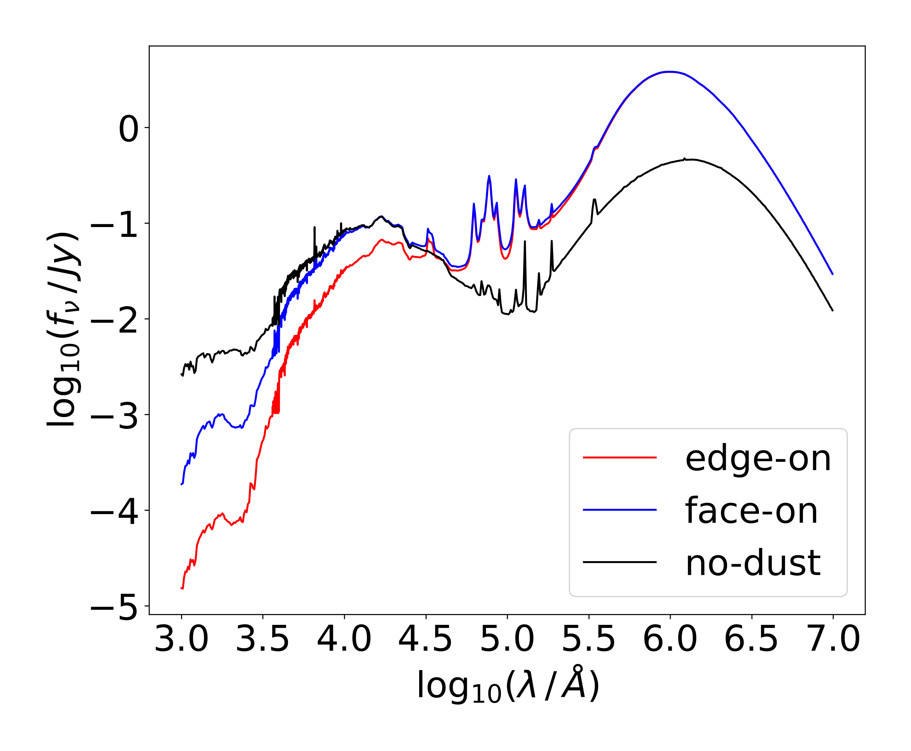
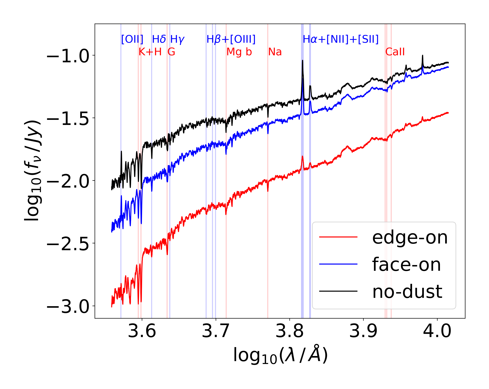
3.2 نموذج المصدر
لكل جسيم نجمي، نسند توزيعا للطاقة الطيفية (SED) من FSPS (Conroy et al., 2009; Conroy and Gunn, 2010; Foreman-Mackey et al., 2014) وفقا لعمره وفلزيته، مع افتراض دالة كتلة ابتدائية (IMF) من نوع Chabrier (Chabrier, 2003)، وموزونة بكتلته. ونأخذ عينات من الفوتونات من SED ونطلقها نظيريا في إطار سكون الجسيم، ثم نزيحها دوبلريا تبعا لذلك.
في الكون الحقيقي، تنهار سحابة من الغاز البارد تثاقليا لتكوّن جمهرة من النجوم. وتكون لهذه التجمعات من النجوم عادة كتل نجمية كلية بين و، موزعة وفق قانون قوة بدليل (Heyer et al., 2001). وفي المقابل، تمثل تجمعات النجوم في المحاكيات بجسيمات نجمية وحيدة العمر ووحيدة الفلزية تكون لها عادة كتل أكبر بكثير. ويؤدي هذا التقريب إلى تواريخ تشكّل نجوم أكثر عشوائية مما ستكون عليه لو حوكيت بدقة أعلى. وبالنسبة إلى التجمعات النجمية القديمة، يكون هذا التأثير ضئيلا، لكنه بالنسبة إلى التجمعات النجمية الفتية، التي تتغير أطيافها بسرعة مع تغيرات طفيفة في العمر، يسبب تباينا كبيرا غير واقعي في الأطياف الناتجة.
وللتخفيف من هذا التأثير، طورنا ونفذنا وصفة دون شبكية تنعم فعليا تواريخ تشكّل النجوم المحاكاة بحيث يكون الفرق النموذجي في العمر بين جسيمين نجميين فتيين متجاورين (بالمعنى الزمني) أقل من Myr، وهو المقياس الزمني الذي تظهر عليه هذه الأطياف تباينا مهما. ولتحقيق ذلك، نستبدل كل جسيم نجمي بـ 50 جسيمات جديدة متساوية الكتلة (مطبعة لحفظ الكتلة النجمية الكلية) وبأعمار مأخوذة من توزيع طبيعي متمركز حول عمر الجسيم الأم. ويُحسب الانحراف المعياري للتوزيع على أنه الأكبر من فرقي العمر بين الجسيم الأم و من الجيران الأصغر والأكبر عمرا، مضروبا في معامل قياس ثابت، . ونضمن أيضا أن تكون أعمار الجسيمات المسحوبة أكبر من وأقل من عمر أقدم جسيم أم، وذلك بإعادة سحب أي جسيمات لا تحقق هذه المعايير. ومن خلال الفحص البصري لتواريخ SFHs المنعمة، وجدنا أن و ينتجان توزيعات ذات دقة عالية بما يكفي للجسيمات النجمية الفتية مع الاحتفاظ بالسمات المميزة لتواريخ SFHs الأصلية (انظر الشكل 2 للمقارنات). ويظهر أثر إجراء تنعيم العمر هذا في sSFR المتوسط على آخر 100 Myrs في الشكل 3. ونرى أن معظم التغيرات المهمة في sSFR تحدث في المجرات الأقل كتلة. ويعود ذلك إلى أن هذه المجرات تملك عددا أقل من الجسيمات النجمية، لذلك عندما نعد فقط الجسيمات النجمية المتكونة في آخر 100 Myrs، يصبح التشتت في sSFR محكوما بتقطع الجسيمات لا بالتأثيرات الفيزيائية داخل المحاكاة. وبالنظر إلى الشكل 4، نرى أن إجراء تنعيم العمر يقرّب الألوان الحساسة لـ sSFR من توزيع الألوان الموجود في DustPedia.
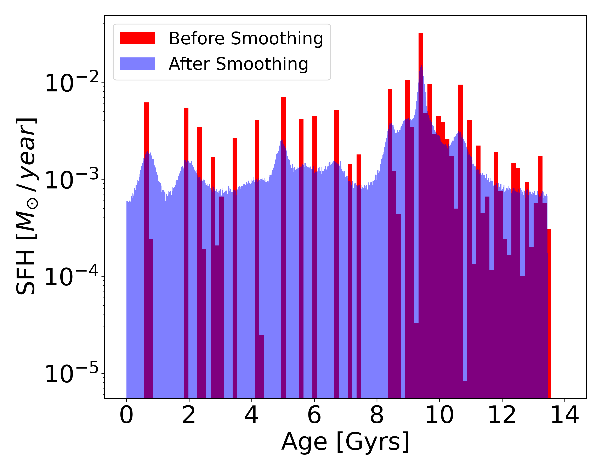
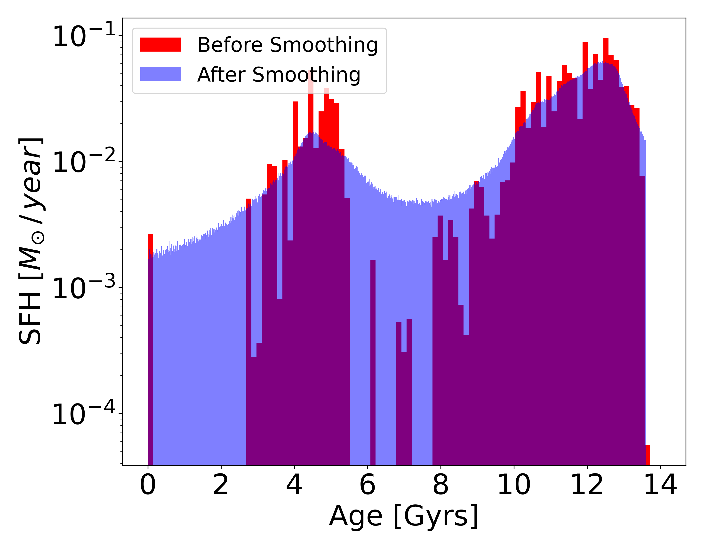
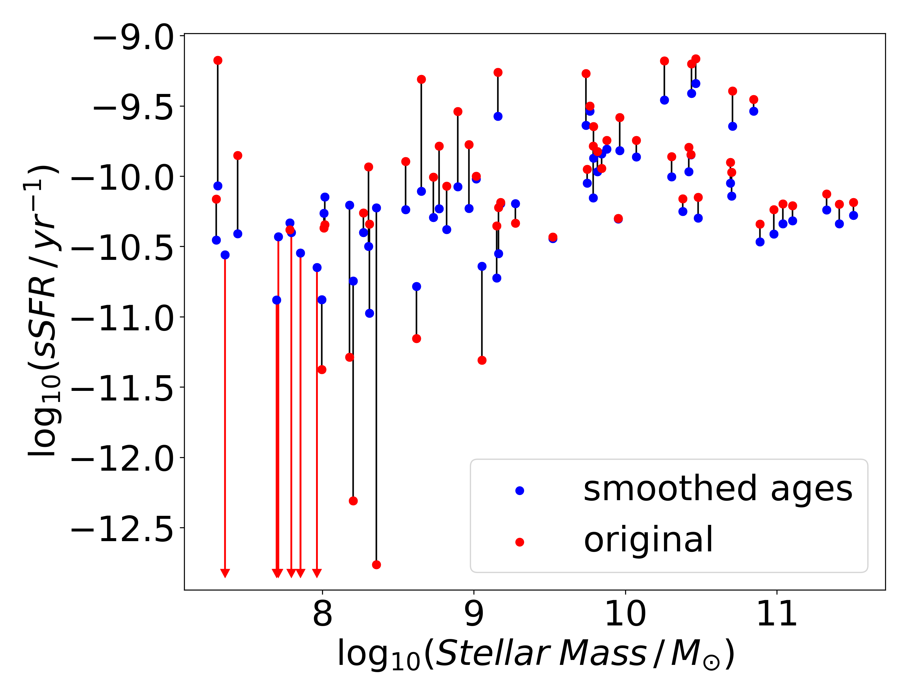
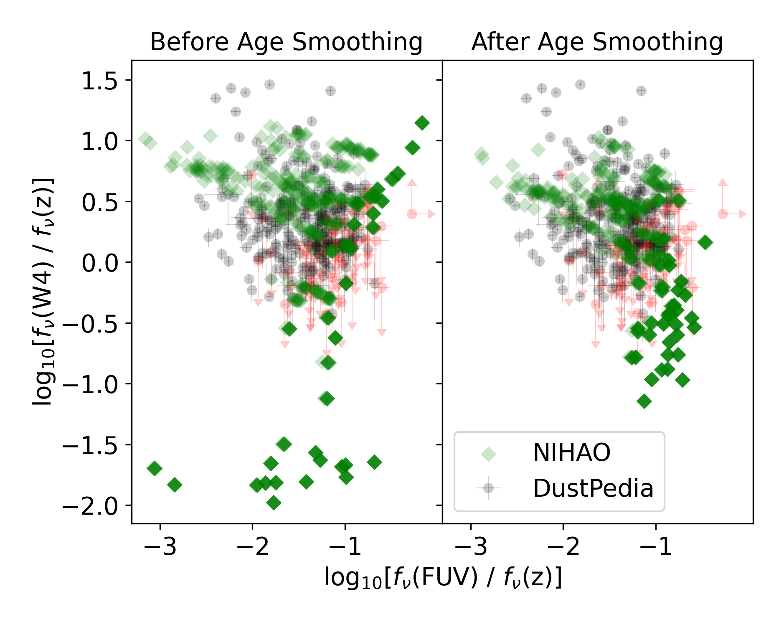
وبالنسبة إلى الجسيمات النجمية الأصغر من 10 Myrs، نحتاج أيضا إلى حساب الامتصاص والإصدار من الغبار داخل مناطق التفكك الضوئي (PDRs) الناتجة عن السحب الولادية المتبقية للنجوم حديثة التكوين. ولأن هذه المناطق دون الدقة المكانية للمحاكيات، نعتمد الطريقة الشائعة الاستخدام (Groves et al., 2008; Jonsson et al., 2010; Hayward and Smith, 2015; Trayford et al., 2017; Trčka et al., 2020; Kapoor et al., 2021) المتمثلة في إسناد توزيعات SED من MAPPINGS-III تتضمن مسبقا آثار التأين الضوئي والحجب داخل هذه السحب الجزيئية الكثيفة. أما توزيعات SED النجمية الأساسية المستخدمة في هذه الحسابات فهي من Starburst99 (Leitherer et al., 1999). وتتحدد أطياف SED الخارجة بالعمر والفلزية وضغط ISM وكسر تغطية PDR. والعمر والفلزية خاصيتان للجسيمات النجمية في NIHAO. واتباعا لـ Kapoor et al. (2021)، نسحب عشوائيا معاملات الانضغاط، وهي مقياس لكثافة مناطق ، من التوزيع اللوغاريتمي الطبيعي مع log C = 5 وانحراف معياري قدره 0.4. ثم نحسب ضغوط ISM لكل معامل انضغاط مسحوب باستخدام المعادلة 13 من Groves et al. (2008). ويُحسب كسر تغطية PDR لكل جسيم باستخدام المعادلة حيث هو عمر الجسيم و معامل حر في نموذجنا. كما نضيف جسيمات غاز “شبحية” بكتلة سالبة تساوي 10 مرة الكتلة النجمية للجسيم الأم لتجنب العد المزدوج للغبار في هذه المناطق، اتباعا لـ Trayford et al. (2017).
سننتج أطيافا “خالية من الغبار” باستبعاد الغبار بين النجمي المرتبط
بجسيمات غاز المحاكاة الموصوفة في القسم الفرعي التالي. وننتج
هذه الأطياف من أجل حساب منحنيات التوهين. غير أنه،
كما لوحظ في الشكل 1، في نماذج Groves et al. (2008) للجسيمات
النجمية الفتية يوجد بعض توهين الغبار وإصدار IR، حتى عندما يكون .
وبما أننا لا نستخدم الأطياف الخالية من الغبار إلا لحساب التوهين، فما دام
التوهين الداخلي للجسيمات النجمية الفتية صغيرا بما يكفي
يمكننا إهمال هذا التأثير بأمان.
ولقياس هذه الطاقة الموهّنة كميا، نحسب الطاقة بين
912 Å و2 ميكرون لجسيمات FSPS (الخالية حقا من الغبار) ذات
100 أعمار موزعة بانتظام بين 0 و10 Myrs، وجسيم MAPPINGS-III واحد (يفترض SFR ثابتا خلال آخر 10 Myrs)، وكلاهما مطبع إلى
. ونستخدم FSPS هنا بدلا من Starburst99، وهو SSP الأساسي المستخدم في جسيمات MAPPINGS-III المتشكلة نجميا، لأن نسخة Starburst99 المستخدمة في SKIRT تتضمن أيضا إصدار IR، ولذلك لا بد أن يكون جزء من طاقتها موهنا مسبقا. ومن هذه الحسابات، نجد أن
3.41% من الطاقة في أطياف جسيم MAPPINGS-III قد وُهّنت بالنسبة إلى
FSPS. وعلاوة على ذلك، ونظرا إلى أن جزءا صغيرا فقط من الكتلة النجمية
موجود في هذه الجسيمات المتشكلة نجميا، نستنتج أن هذا
التوهين دون الشبكي في الأطياف “الخالية من الغبار” غير مهم لمنحنيات التوهين الناتجة.
3.3 نموذج الغبار
لأن محاكيات NIHAO لا تنمذج جمهرة الغبار مباشرة، نفترض أن كل جسيم غاز يحتوي على كتلة غبار معطاة بكسر ثابت، هو نسبة الغبار إلى المعادن، من كتلته في المعادن. ونقيد نسبة الغبار إلى المعادن، وهي المعامل الحر الثاني في نموذجنا، بمقارنة القياسات الضوئية الناتجة بعينة DustPedia. ونفترض أيضا عدم وجود غبار في الغاز فوق درجة حرارة عظمى قدرها ، مع أن النتائج المعروضة في هذه الورقة غير حساسة لتغييرات قدرها في درجة الحرارة هذه.
ولإجراء حسابات النقل الإشعاعي، نقسم الفضاء باستخدام شبكة مكانية من نوع OctTree نقسمها فرعيا حتى تحتوي كل خلية شبكة على جسيم غاز واحد على الأكثر. ويتجاوز هذا الإجراء التقسيمي معاملات تحدد أدنى وأقصى مستويات التنقيح المسموح بها. ونضبط المستوى الأدنى على 6 والأقصى على 99، وهي أكبر قيمة مسموحة، بحيث لا نتجاوز إجراء التقسيم الذي يضع جسيم غاز واحدا في كل خلية. ومع أن خفض المستوى الأدنى لا يخلّف إلا أثرا صغيرا في القياس الضوئي الكلي، فإننا نختار هذه القيمة بغرض توليد صور أعلى دقة في ISM المنتشر. وبعد ضبط الشبكة المكانية، تعد كل خلية منتظمة في خواصها البصرية.
نستخدم نموذج الغبار THEMIS (Jones et al., 2017) في حسابات النقل الإشعاعي. ومن الأهمية الخاصة لهذا العمل أن هذا النموذج للغبار يسند منحنيات إخماد مختلفة اعتمادا على الكثافة في كل خلية غاز، عاكسا تطور الغبار استجابة للظروف الفيزيائية في ISM، مع حبيبات أكثر تكتلا في المناطق الأكثف. وبدلا من ضبط الخواص البصرية للغبار لتلائم الرصدات الفلكية، تحدد هذه الخواص في هذا النموذج من قياسات مخبرية لنظائر الغبار الكوني. وينظر هذا النموذج في جمهرة غبار ذات مكوّنين تتألف من سيليكات لابلورية وهيدروكربونات لابلورية. وتفترض حبيبات السيليكات، التي تتكون نصفها كتليا من إنستاتيت لابلوري ونصفها من فورستريت لابلوري، أنها تتبع توزيعا حجميا لوغاريتميا طبيعيا، بينما تفترض حبيبات الهيدروكربون أنها تتبع مزيجا من توزيعات لوغاريتمية طبيعية وقانون قوة. ونستخدم 15 خانات حجمية لكل من جمهرتي السيليكات والهيدروكربون، تسخن كل منها عشوائيا بواسطة مجال الإشعاع المحلي كما وصفه Camps et al. (2015). وبالنسبة إلى افتراض الاتزان الحراري المحلي، فإن التسخين العشوائي للحبيبات يوسع توزيع درجات حرارة الغبار، إذ تمتلك الحبيبات الأصغر درجات حرارة أعلى والحبيبات الأكبر درجات حرارة أخفض لمجال إشعاع معين.
4 نسب المحورين
لإيجاد اتجاهات رؤية تغطي مدى نسب محوري كل مجرة بطريقة فعالة، نجري محاكيات نقل إشعاعي منفصلة لا تتضمن إلا الجسيمات النجمية (بلا غبار) ولا تخزن إلا فيوض حزمة ، المشار إليها هنا بـ ، محلولة مكانيا في 250250 بكسل. ولكل مجرة محاكاة، يملأ ملف معاملات SKIRT بـ 500 أداة بزوايا ميل وسمت مأخوذة بانتظام على كرة (تدير زاوية اللف على امتداد خط البصر، ومن ثم لا تؤثر في نسب المحورين).
لحساب نسب المحورين لكل اتجاه، استخدمنا طريقة قائمة على العزوم الموزونة بالفيض للصورة الخالية من الغبار. وبما أن المجرات لا تملك ملامح إهليلجية صرفة، فإن نسبة المحورين ليست كمية محددة تماما. ونحن نهتم بنسبة محوري القرص، لا القضيب أو الانتفاخ أو الهالة النجمية، ولذلك عدلنا تقنية وزن الفيض لتكون أكثر حساسية لمنطقة القرص.
نجد أولا مركز كل صورة بأخذ متوسط موضع 50 ألمع بكسل. ثم نستخدم قيمة ألمع بكسل باعتبارها أكبر قيمة فيض مسموحة؛ وتضبط كل الفيوض الأكبر على هذه القيمة حتى لا تهيمن على الملاءمات. وبعد تطبيع الفيوض بحيث تصبح القيمة العظمى مساوية للواحد، نضبط كل البكسلات ذات قيم الفيض المطبعة الأقل من 0.01 على 0 لتجنب الملاءمة على أطراف المجرة. ثم نقيس فيوض البكسلات المطبعة باستخدام بحيث تكون الملاءمات حساسة للضوء القادم من الأقراص، لا للمناطق الأشد لمعانا فقط. وأخيرا، نحجب البكسلات التي تقل مسافتها عن 7 بكسل من المركز () لمنع البكسلات ذات أنصاف الأقطار الصغيرة من الهيمنة على الملاءمات.
ثم نحسب العزوم الثانية للفيوض المعدلة، محولين إياها إلى زوايا موضع ونسب محورين باستخدام الطريقة التي وصفها Lupton (1996). والعزوم الثانية هي:
| (1) | |||||
| (2) | |||||
| (3) |
وبالقياس إلى معاملات Stokes للاستقطاب، نعرّف:
| (4) | |||||
| (5) |
ثم يمكن كتابة زاوية الموضع ونسبة المحورين:
| (6) | |||||
| (7) |
ونتيجة هذا التحليل جدول لزوايا الميل والسمت
ونسب المحورين المقابلة لها. ومن هذا الجدول نختار 10 اتجاها
لكل مجرة تغطي مدى نسب محوريها بأكبر انتظام ممكن.
5 التحقق بالمقارنة مع المجرات المرصودة
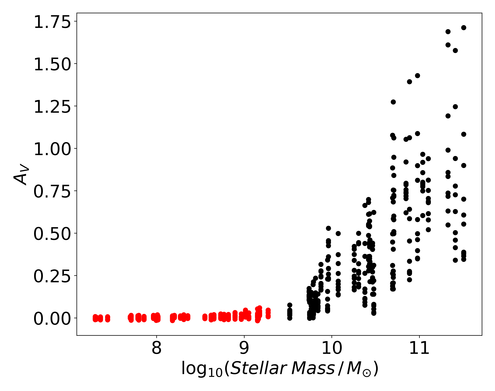
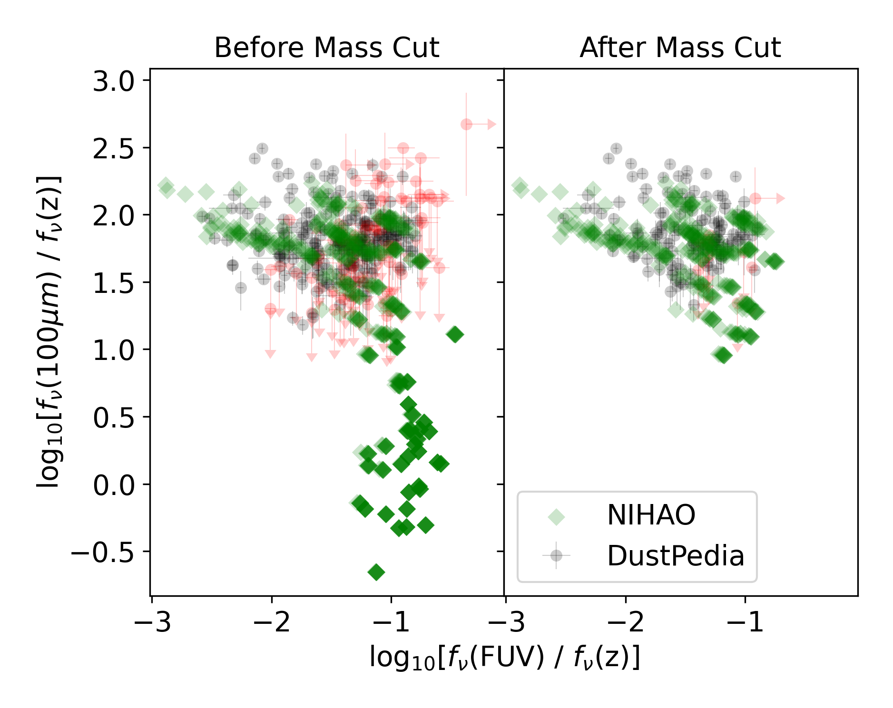
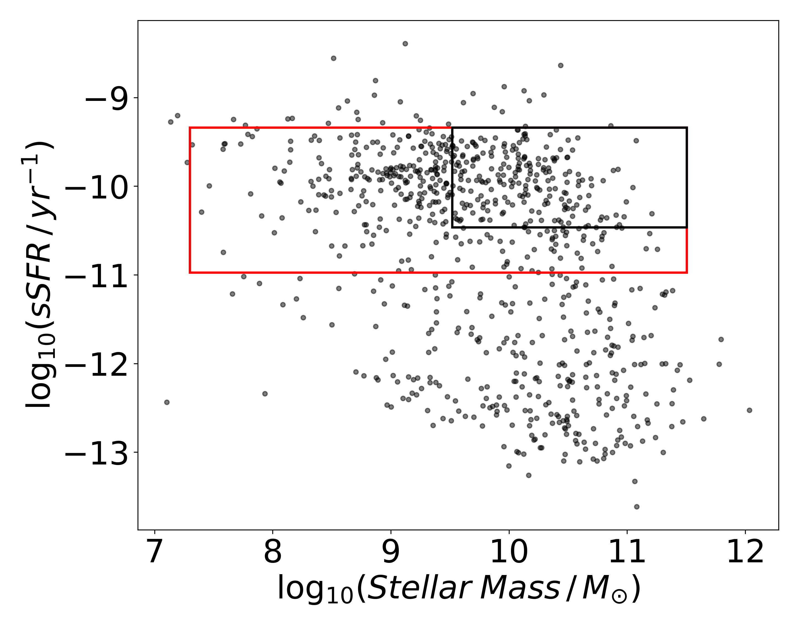
كما ذُكر في القسم 3.2، نستخدم عينة DustPedia (Davies et al., 2017) للتحقق من اختيارات معاملات النقل الإشعاعي لدينا. وتتضمن هذه العينة تقديرات للكتلة وSFR لكل مجرة كما استنتجت من ملاءمات CIGALE (Boquien et al., 2019). وبغرض مقارنة هذه المجرات بالرصدات الصورية من عينة NIHAO، نستبعد أي مجرة محاكاة ذات كتلة نجمية كلية دون . وفي كل المقارنات الضوئية المعروضة في هذا العمل، لا ندرج إلا مجرات DustPedia ذات الكتل النجمية وsSFRs الواقعة ضمن مجال مجرات NIHAO قيد النظر.
ولغرض تقييد معاملات نموذجنا الحرة، نريد إدراج مجرات DustPedia الموثوقة فقط في قياساتها الضوئية في FUV وIR. يبين الشكل 5 الكتل النجمية وقيم ، وهي الفرق بين مقادير حزمة V الموهّنة وغير الموهّنة (Å)، لكل الاتجاهات المختارة لكل المجرات في محاكياتنا. ونرى ارتباطا قويا بين والكتلة النجمية. وعلى وجه الخصوص، نرى أن المجرات ذات الكتلة النجمية دون تتعرض لتوهين ضئيل جدا بغض النظر عن نسبة المحورين. ولهذه المجرات ذات قيم المنخفضة تأثير قوي في رسوم اللون-اللون الحساسة للغبار. يبين الشكل 6 توزيعات ألوان مقابل لمجرات DustPedia وNIHAO. وتبين اللوحة اليسرى كلتا العينتين الكاملتين، بينما تبين اللوحة اليمنى العينات المحدودة بالمجرات ذات الكتلة النجمية الكلية فوق . وتمثل النقاط الحمراء مجرات DustPedia التي لها فيض ضوئي واحد أو أكثر متوافق مع الصفر عند 2، وترسم كحدود علوية أو سفلية. لاحظ أن كل رسم لا يحتوي إلا على مجرات DustPedia الواقعة ضمن مجالي sSFR والكتلة النجمية لمجموعة NIHAO المقابلة. ونرى من هذا الشكل أن مجرات DustPedia التي تقع ضمن مجالي الكتلة النجمية الكلية وsSFR لمجرات NIHAO منخفضة الكتلة، لا لمجرات NIHAO الأعلى كتلة، تميل إلى إعطاء حدود علوية فقط لألوان . وبسبب ذلك، لن تكون مجرات NIHAO منخفضة الكتلة هذه مفيدة في تقييد معاملات نموذجنا الحرة. وفي بقية هذه الورقة، ما لم يذكر خلاف ذلك، سنستبعد من تحليلنا مجرات NIHAO ذات . انظر الشكل 7 لرؤية توزيع الكتل النجمية الكلية المستنتجة وsSFRs لمجرات DustPedia، إلى جانب مجالات NIHAO قبل استبعاد هذه المجرات منخفضة الكتلة وبعده.
بالنظر إلى اختيارات نموذج النقل الإشعاعي الموصوفة أعلاه، توجد معاملتان حرتان ينبغي تقييدهما بالمقارنة مع الرصدات. الأول هو نسبة الغبار إلى المعادن، التي تعمل كمعامل قياس لكمية الغبار المنتشر في الوسط بين النجمي. والثاني هو زمن إزالة السحابة الولادية، الذي يحدد كسر تغطية الغبار دون الشبكي المفترض وجوده حول التجمعات النجمية الأحدث سنا جدا بوصفه دالة في عمرها.
ومن خلال مقارنة رسوم اللون-اللون الحساسة لتأثيرات الغبار بين عينة DustPedia ورصداتنا الصورية لمجرات NIHAO، يمكننا تحديد ما إذا كانت اختيارات معاملاتنا تنتج قياسات ضوئية واقعية. وبينما ضبطت أعمال سابقة (Camps et al., 2016; Trayford et al., 2017; Trčka et al., 2020; Kapoor et al., 2021) المعاملات لتتوافق مع توزيعات اللون-اللون المرصودة، فإننا هنا ننظر في قيد إضافي يتعلق بكيفية اعتماد ألوان المجرات على زاوية الرؤية (التأثيرات المقاسة بواسطة Maller et al. 2009، وMasters et al. 2010، وConroy et al. 2010). وعلى وجه الخصوص، نجري ملاءمات خطية منفصلة لاعتماد نسب فيض و على نسبة المحورين للمجرات القرصية في NIHAO وDustPedia. ويعمل الفرق في ميل هذه الملاءمات بين المحاكيات والرصدات مقياسا لتحديد دقة فضاء معاملات المعالجة اللاحقة لدينا.
6 النتائج
في القسم 6.1 نقيس كميا كيف تتغير ألوان المجرات مع نسبة المحورين. وفي القسم 6.2 نفتش فضاء معاملات نموذج النقل الإشعاعي لدينا ونحدد المعاملات التي تطابق الرصدات على أفضل وجه. وبعد تثبيت اختيارات معاملاتنا، نعرض صور المجرات المحاكاة، وتوزيعات الألوان، ومنحنيات التوهين، وتوازن الطاقة بدلالة نسبة المحورين (الأقسام 6.3، 6.4، 6.5، و6.6).
6.1 رسوم ألوان نسبة المحورين
في هذا القسم، نحدد اعتماد نسب فيض و على نسبة المحورين للمجرات القرصية في DustPedia والمجرات القرصية في NIHAO. وبالنسبة إلى مجرات NIHAO، نعرّف المجرة القرصية بأنها تلك التي تكون أدنى نسبة محورين لها عبر الاتجاهات المعاينة أقل من . أما بالنسبة إلى DustPedia، فنستخدم التصنيفات المورفولوجية المضمنة مع البيانات ونعد أي مرحلة عددية في تصنيف Hubble أكبر من أو تساوي 0 مجرة قرصية. وكيفيا، نتوقع أن تزداد ألوان و مع زيادة نسبة المحورين، لأن الضوء المنبعث من النجوم سيحتاج في المتوسط إلى المرور عبر غبار أكثر كلما أصبح خط بصرنا أكثر قربا من الوضع الحافي.
ولجعل هذه المقارنة محددة، ننظر في كيفية تغير ألوان كل مجرة مع نسبة المحورين بالنسبة إلى لونها المتوقع في الوضع المواجه. وبالنسبة إلى المجرات المحاكاة، يمكننا فعليا توجيه نظامنا لرؤية ألوان الوضع المواجه لأي مجرة معينة، لكننا لا نستطيع فعل ذلك للمجرات في الكون الحقيقي. وبالنسبة إلى المجرات الحقيقية، نستخدم قيم sSFRs المقاسة لمجرات DustPedia المواجهة لإنشاء علاقة بين sSFR المقاس وألوان الوضع المواجه؛ ثم نستخدم هذه العلاقة لكل مجرات DustPedia لاستنتاج ما كان سيكون عليه لون الوضع المواجه. ونستخدم sSFR لأنه خاصية جوهرية مستنتجة للمجرة، جوهرية بمعنى أنها لا ينبغي أن تعتمد على نسبة المحورين، وترتبط ارتباطا وثيقا نسبيا بنسب الفيض. ويفترض هذا الإجراء أن استنتاجات ملاءمات CIGALE في DustPedia لا تعتمد على نسبة المحورين،
يبين الشكل 8 ألوان وsSFRs المجرات القرصية المواجهة في DustPedia والمجرات القرصية المواجهة في NIHAO (الأخيرة تحت اختيارات المعاملات الحرة Myrs و). ونجري انحدارا خطيا لـ على في كل عينة. وتتيح لنا هذه الملاءمة تقدير لون الوضع المواجه لأي مجرات قرصية في أي من العينتين بناء على sSFR الخاص بها. ثم نعرّف بواقي ألوان كل مجرة بالنسبة إلى ألوان الوضع المواجه المستنتجة هذه.
يبين الشكل 9 توزيع بواقي الألوان هذه مقابل نسبة المحورين لمجرات NIHAO وDustPedia القرصية. وتبين هذه الرسوم آثار الاحمرار التي قاسها مؤلفون سابقون. ثم نجري انحدارا خطيا للباقي على نسبة المحورين لهاتين الجمهرتين. وفي القسم 6.2، نستخدم الفروق في الميل بين DustPedia وNIHAO مقياسا لتقييد معاملاتنا الحرة.
للتشتت حول الخطوط في الشكل 9 مساهمة ما من التشتت الجوهري في مقدار الاحمرار عند نسبة محورين معينة، ومن التشتت في اللون عند sSFR معين. وبالنسبة إلى المجرات المحاكاة، يمكننا فحص التشتت الجوهري حول اعتماد نسبة المحورين على نحو مباشر أكثر، لأننا نعرف ألوان الوضع المواجه الفعلية. ولفحص هذا التشتت الجوهري، يطرح الشكل 10 ألوان الوضع المواجه الفعلية لكل مجرة NIHAO لتحديد ألوان مرجعية. وأوضح فرق بين الشكلين 9 و10 هو أنه كلما اقتربنا من اتجاهات الوضع المواجه، نرى التشتت في ألوان NIHAO حول المتوسط يقترب من الصفر. ومع ذلك لاحظ أن الميل الأفضل ملاءمة ليس مرجحا أن يتأثر بهذا الاختيار، بقدر ما أن sSFR لمجرات NIHAO لا يرتبط بقوة بنسب محوريها في الرصدات المحاكاة.
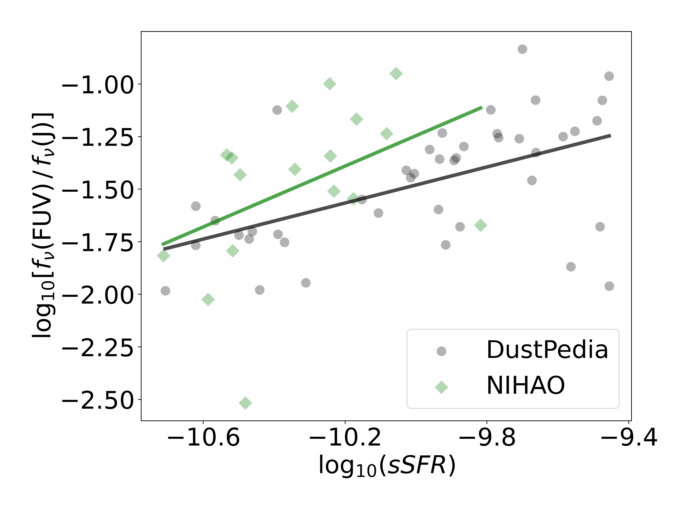
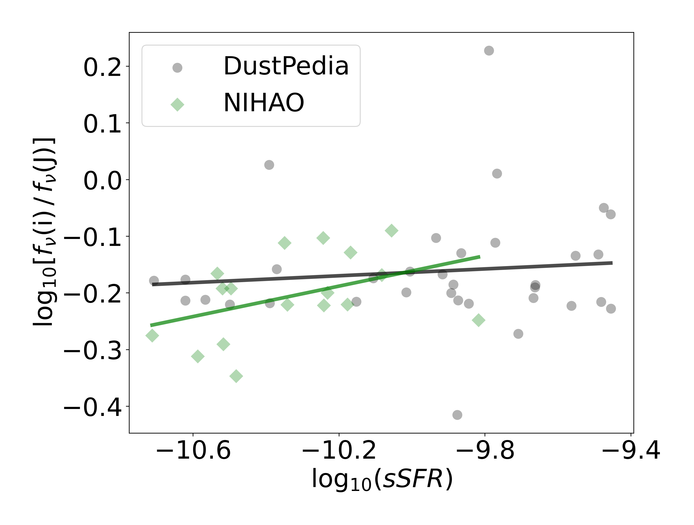
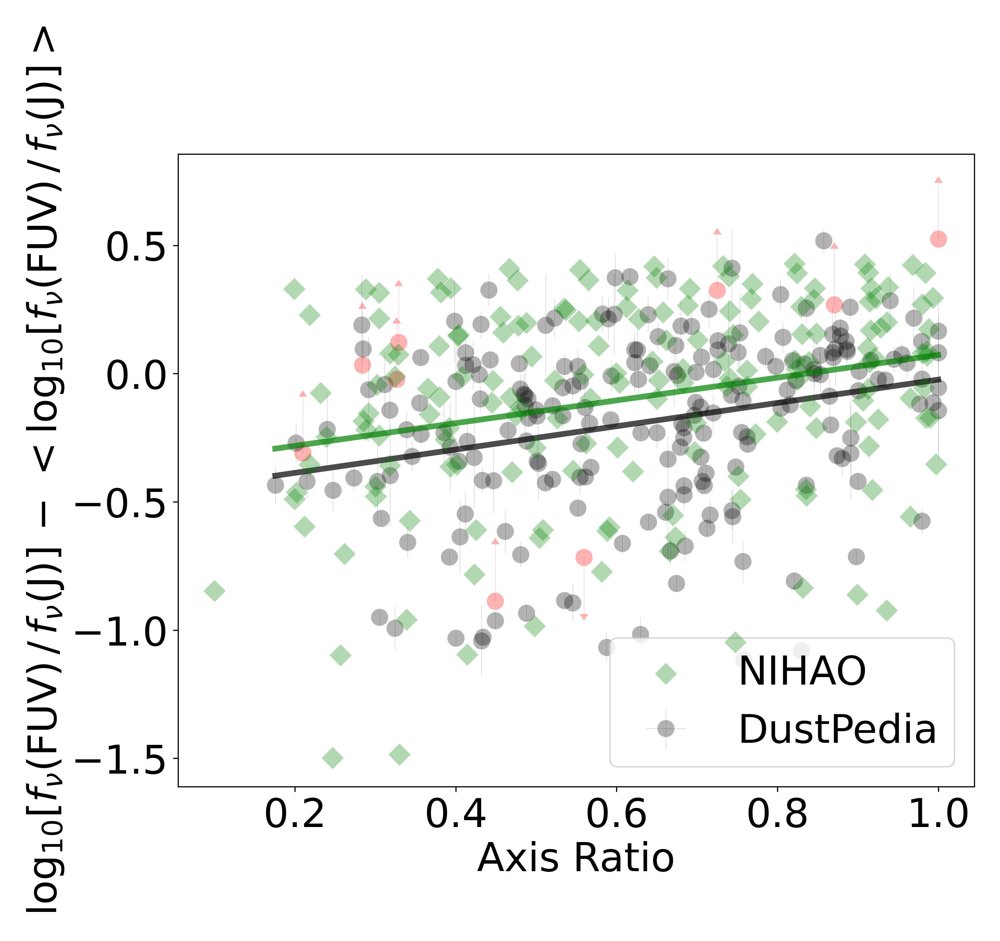
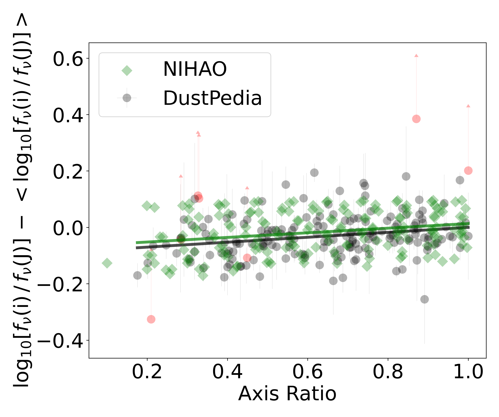
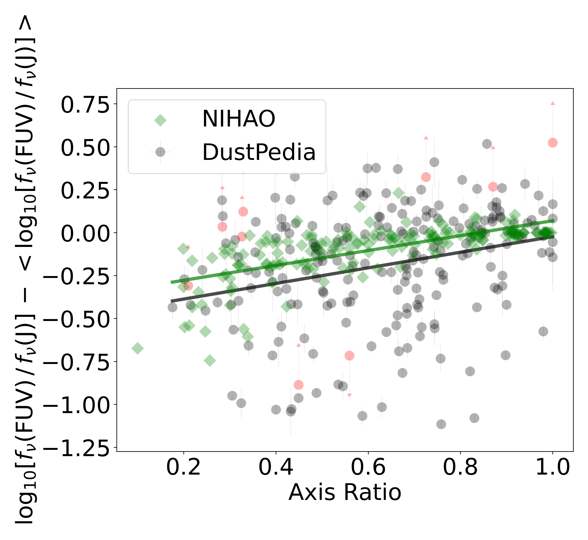
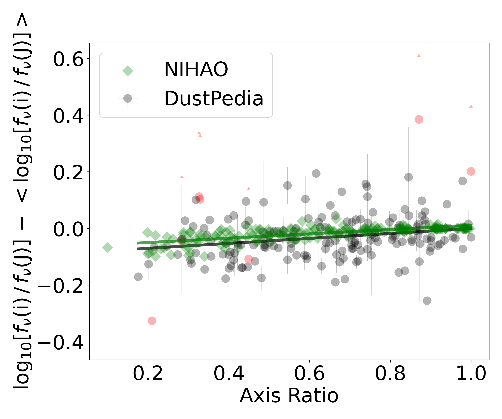
6.2 فضاء المعاملات
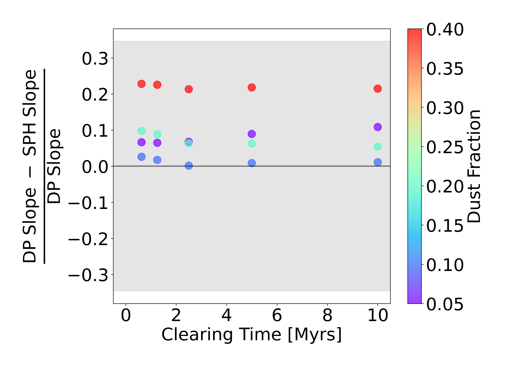
لتحديد معاملاتنا الحرة، زمن الإزالة وكسر الغبار، نختبر شبكة من أزمنة الإزالة (المحور الأفقي) وكسور الغبار (ألوان الرموز). وتفصل قيم المعاملات بانتظام في الفضاء اللوغاريتمي: و Myrs. يبين الشكل 11 الفرق الكسري في ميول أفضل ملاءمة لبواقي لون مقابل نسبة المحورين بين المجرات القرصية في DustPedia وNIHAO المقابلة لكل نقطة شبكة. وتمثل المنطقة المظللة في هذا الرسم الخطأ المعياري في فرق الميل المحدد بطريقة bootstrap، متوسطا على جميع نقاط البيانات، ومتمركزا عند . ولكل و، نحسب الخطأ المعياري بطريقة bootstrap بسحب نقاط البيانات عشوائيا من NIHAO وDustPedia مع الإرجاع وتكرار إجراءات الملاءمة المبينة في الشكلين 8 و9. ويعطي الانحراف المعياري للفروق الكسرية في الميل بين 100 تكرارا للسحب مع الإرجاع والملاءمة الخطأ المعياري بطريقة bootstrap لكل توليفة من و. ويبين الشكل 12 توزيع نسب فيض مقابل لـ DustPedia وNIHAO المقابلة لكل نقطة شبكة.
في الشكل 11، وعلى الرغم من أن الخطأ المعياري بطريقة bootstrap كبير بما يكفي لجعل جميع نقاط البيانات متسقة مع ، نرى أن فروق الميل الكسرية تظهر باستمرار أفضل توافق مع DustPedia. وفي الشكل 12، نرى أيضا أن عمود يظهر باستمرار أفضل توافق مع DustPedia، في حين لا تملك القيم المختلفة لـ إلا أثرا صغيرا في توزيع الألوان. ونظرا إلى هذه الصعوبة في تقييد ، نعتمد قيمة وسطية قدرها Myrs، مما يؤدي إلى اختيارات معاملاتنا النهائية وMyrs.
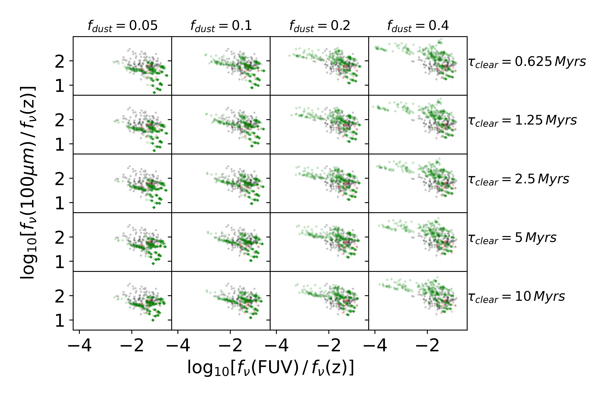
وباستخدام القيم نفسها لـ ، نجري المقارنات نفسها لحالة عدم وجود جسيمات متشكلة نجميا (تنمذج كل الجسيمات النجمية باستخدام FSPS). وفي هذه الحالة يكون فضاء المعاملات ذا 1 أبعاد فقط، ونجد أن يحقق أفضل توافق مع مجرات DustPedia.
6.3 الصور

يبين الشكل 13 صورا مركبة لكل مجرة NIHAO عند أكثر اتجاهاتها مواجهة (الأعمدة 5 اليسرى) وأكثرها حافة (الأعمدة 5 اليمنى). ومن أجل منع ألمع البكسلات من الهيمنة على الصور، تقطع فيوض كل مجرة منفردة وتطبع وتقاس بامتداد arcsinh. وننشئ الصورة بجعل القناة الحمراء مساوية لحزمة z من وحزمة W4 من ، والقناة الخضراء مساوية لحزمة r من ، والقناة الزرقاء مساوية لحزمة g من وحزمة FUV من . لاحظ أن هذه الاختيارات تجميلية بحتة ولا تؤثر في أي من النتائج الكمية في هذا العمل.
6.4 رسوم اللون-اللون
بالنظر إلى الشكل 14، نرى أن معاملاتنا المحاكاة الأفضل ملاءمة تطابق نوعيا ألوان مجرات DustPedia، مع بعض القيم الشاذة. وفي حين توجد بعض المجرات الناقصة في كل من IR وFUV بالنسبة إلى الضوء البصري، نرى أن هذه الاختلافات تكون أقوى حتى عندما لا ندرج الجسيمات المتشكلة نجميا في نمذجتنا، كما هو مبين في الشكل 15. وليس واضحا ما إذا كانت الاختلافات في الشكل 14 ناجمة عن قيود في نمذجة مناطق ، أو نموذج الغبار المنتشر، أو أنها متأصلة في المجرات المحاكاة.
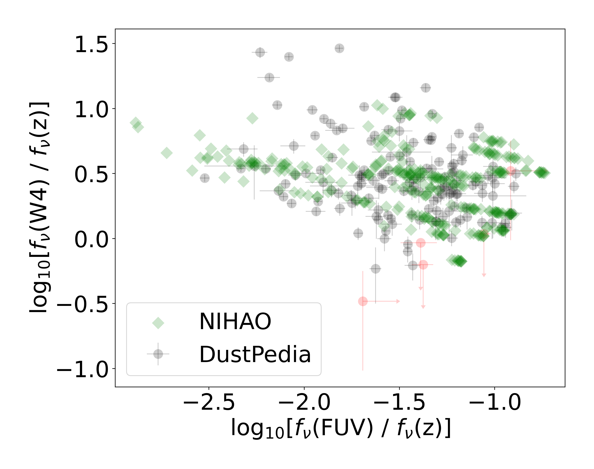
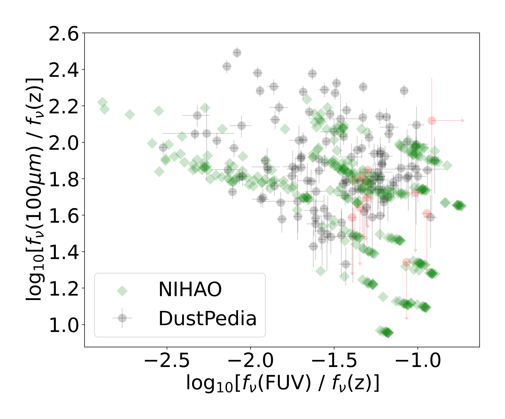
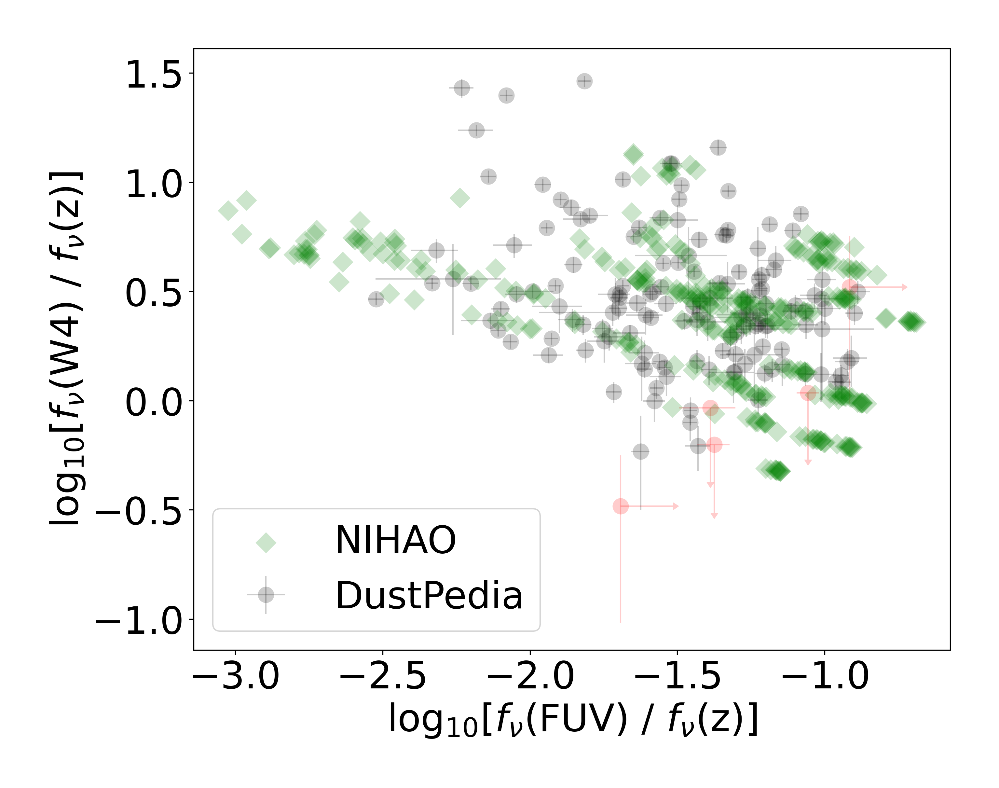
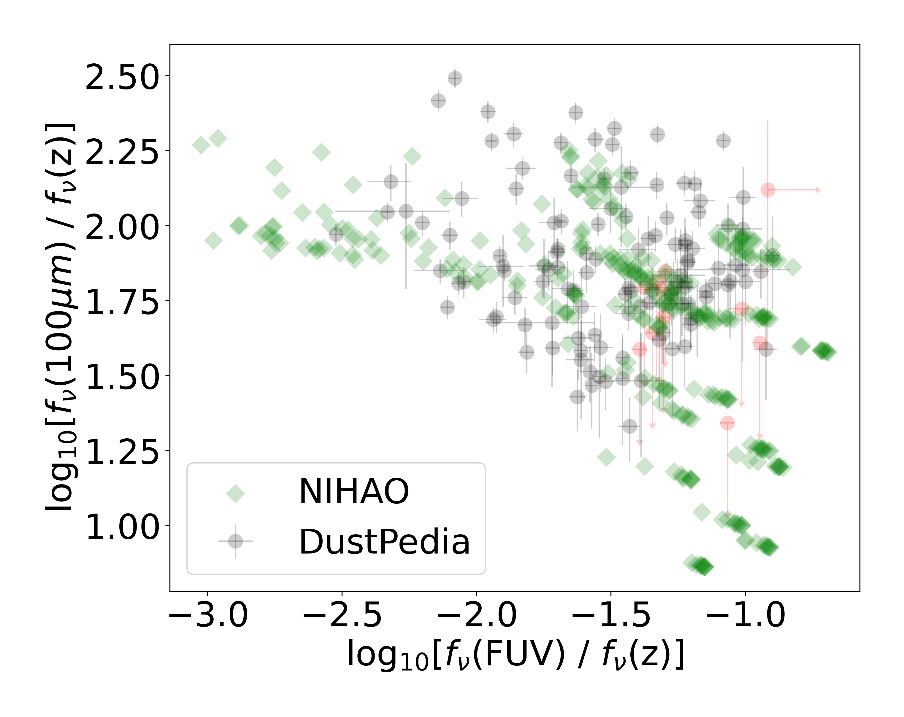
6.5 منحنيات التوهين
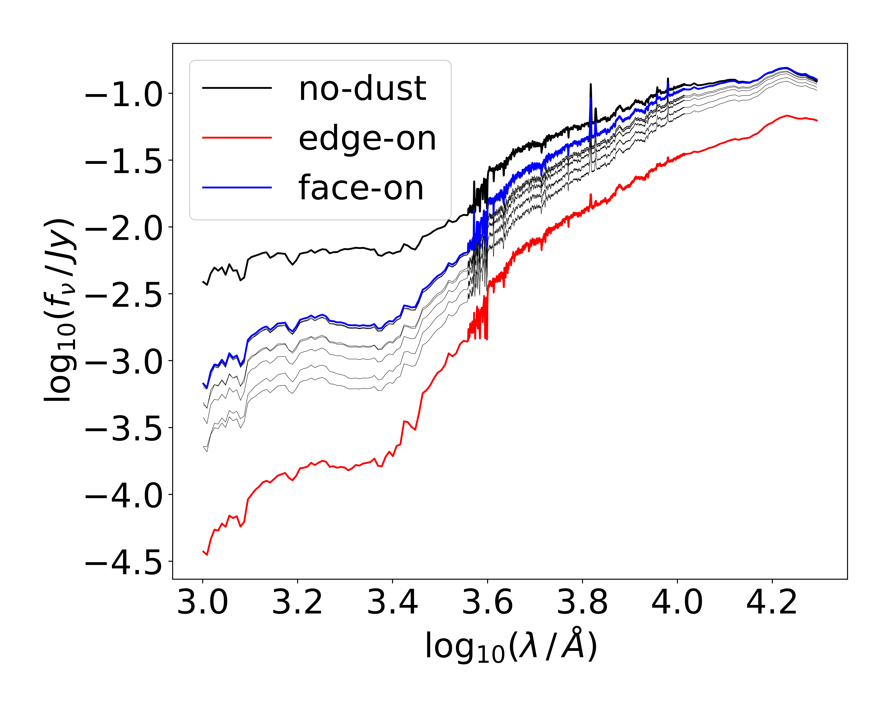
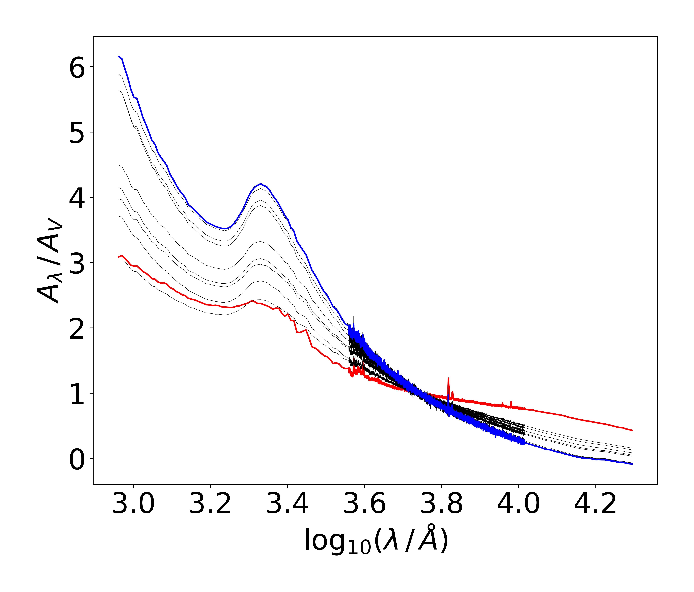

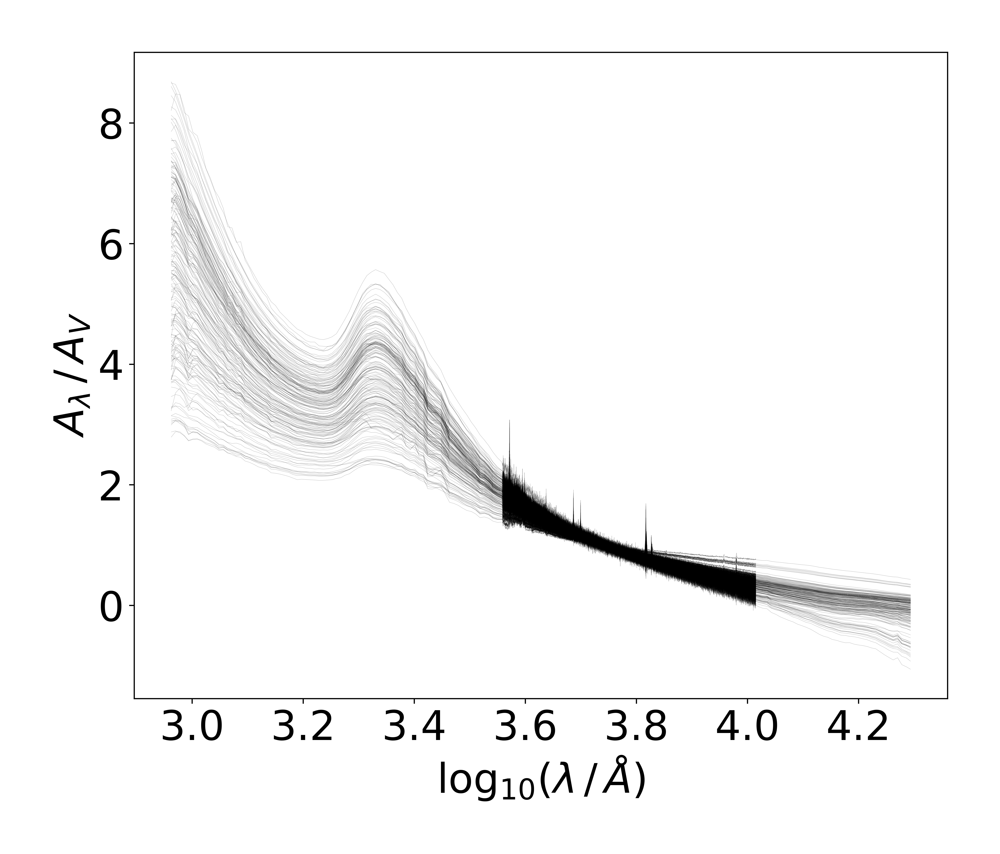
لحساب الطاقة التي يوهّنها الغبار، نشغل كل مجرة محاكاة من دون غبار منتشر (أي عمليا بضبط )، ومن دون غبار دون شبكي من مناطق التفكك الضوئي (PDRs) حول النجوم الفتية (). ثم نحسب التوهين كما يأتي:
| (8) |
وبالنسبة إلى هذه المحاكيات، يكون هذا التعريف مناسبا من Å إلى Å. غير أنه حتى مع ، ما تزال توجد كمية صغيرة من التوهين الجوهري وإصدار الأشعة تحت الحمراء آتية من الجسيمات النجمية المتشكلة نجميا، ويلوث الإصدار عند الأطوال الموجية الأطول. وقد ناقشنا في القسم 3.2 أن التوهين عند الأطوال الموجية الأقصر له أثر مهمل في منحنيات التوهين المحسوبة. ولمقارنة أشكال منحنيات التوهين (أي الاحمرار)، سنطبعها إلى التوهين عند 5500 Å.
يبين الشكل 16 الأطياف ومنحنيات التوهين المطبعة لمجرة قرصية محاكاة واحدة مرئية من 10 اتجاهات مختلفة، مع إظهار اتجاه الوضع المواجه بالأزرق، واتجاه الوضع الحافي بالأحمر، والطيف من دون غبار بالأسود، والاتجاهات المتوسطة بالرمادي. وبالنظر إلى منحنيات التوهين المطبعة في هذا الشكل، نرى أن هناك تباينا مهما في شكل منحنيات التوهين عند اتجاهات رؤية مختلفة.
يبين الجانب الأيسر من الشكل 17 منحنيات التوهين للمجموعة الكاملة المحاكاة من مجرات NIHAO عند كل الاتجاهات 10. وتقابل الخطوط الحمراء المجرات ذات الكتلة النجمية الكلية دون ، وتقابل الخطوط الزرقاء المجرات فوق هذه الكتلة لكن بقيم أقل من 0.2، وتقابل الخطوط الرمادية المجرات فوق هذه الكتلة وبقيم فوق 0.2. ويبين الجانب الأيمن من الشكل 17 النسخ المطبعة من منحنيات التوهين الرمادية من الجانب الأيسر. وبالمقارنة مع الشكل 16، تظهر منحنيات التوهين المطبعة في الشكل 17 تباينا أكبر في الشكل.
وتظهر منحنيات التوهين سمة ضيقة حول Å، وهو الطول الموجي لإصدار ، وحول خطوط إصدار أخرى. وتنتج هذه السمات من التوهين التفاضلي لمناطق تشكّل النجوم بالنسبة إلى مناطق أخرى. وفي كل من الأطياف الموهّنة وغير الموهّنة، تصدر مناطق الكمية نفسها من إصدار . غير أنه في الأطياف الموهّنة، يكون إصدار موهّنا بواسطة PDR المحيطة، بينما يهرب إصدار في الأطياف غير الموهّنة من منطقة SF بحرية. ولأن إصدار يتموضع تفضيليا قرب الغبار، ولا سيما الغبار دون الشبكي في PDRs، نرى نتوءا في منحنى التوهين عند Å. وباتباع خط الاستدلال نفسه، يمكننا أن نعزو النتوءات والانخفاضات المتسقة الأخرى في منحنيات التوهين إلى سمات طيفية أخرى مرتبطة بمناطق أكثر أو أقل غبارا.
6.6 توازن الطاقة
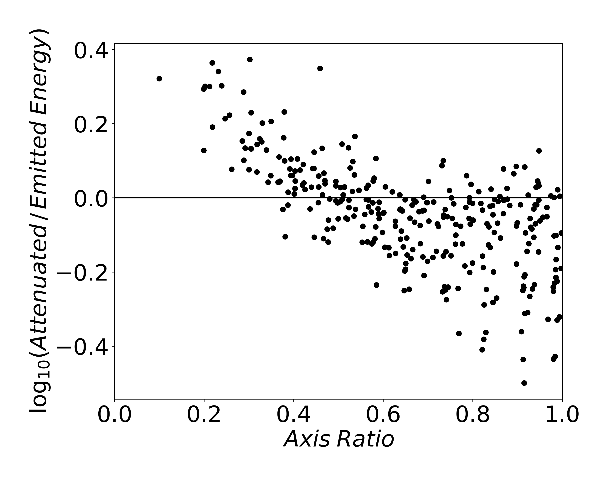
يبين الشكل 18 نسبة الطاقة الموهّنة والطاقة المنبعثة بواسطة الغبار للمجرات المحاكاة ذات الكتلة النجمية الكلية فوق . وتحسب الطاقة الموهّنة بتكامل الفرق بين الأطياف من دون غبار ومع الغبار على أطوال موجية دون ، وتحسب الطاقة المنبعثة بتكامل الفرق بين الأطياف مع الغبار ومن دون غبار على أطوال موجية فوق .
وعلى الرغم من أن الطاقة الكلية (المتكاملة على الزاوية المجسمة) التي يوهّنها الغبار يجب أن تساوي الطاقة الكلية التي يعيد الغبار إصدارها، فإن هذا الشرط لا يصمد عند النظر إلى الضوء الذي يتلقاه راصد في اتجاه معين. فعند نسب المحورين المنخفضة، نرى فائضا في الطاقة الموهّنة بالنسبة إلى الطاقة المنبعثة، وعند نسب المحورين الكبيرة نرى التأثير المعاكس. وهذا ما ينبغي أن نتوقعه كيفيا، لأنه، بالمقارنة مع مجرة مواجهة، سيحتاج الضوء النجمي من مجرة حافية إلى المرور في المتوسط عبر مقدار أكبر من ISM المملوء بالغبار قبل بلوغ الراصد. وبوجه عام، نرى انحرافا قويا عن توازن الطاقة الكامل، المشار إليه بالخط الأفقي. وهذه النتيجة تعارض بشدة الافتراضات التي تضعها برامج نمذجة SED الشائعة الاستخدام مثل Prospector وCIGALE وMAGPHYS، التي تفرض توازن طاقة صارما بين توهين الغبار وإصداره.
7 منتج البيانات
استكمالا لهذه الورقة، نتيح علنا ملفي بيانات يحتويان على قياساتنا الضوئية الصورية النهائية بمعاملات نموذج و Myrs، مع إجراء تنعيم العمر الموصوف في القسم 3.2. وتحسب كل الكميات الضوئية عند مسافة 100 Mpcs. ويحتوي كلا ملفي البيانات على المعلومات الآتية لكل مجرة محاكاة:
-
•
الكتلة النجمية الكلية
-
•
معدل تشكّل النجوم المتوسط على أحدث 100 Myrs
-
•
كتلة الغبار الكلية
-
•
الحجم الفيزيائي
-
•
تاريخ تشكّل النجوم (SFH) بوصفه مدرجا تكراريا للكتلة النجمية بدلالة العمر، محلولا إلى 200 خانات عمرية مفصولة بانتظام في الفضاء اللوغاريتمي
-
•
تاريخ التطور الكيميائي (CEH) بوصفه مدرجا تكراريا 2D للكتلة النجمية بدلالة العمر والفلزية، محلولا إلى خانات عمرية وفلزية 200x200 مفصولة بانتظام في الفضاء اللوغاريتمي
نلفت الانتباه بوجه خاص إلى تاريخ التطور الكيميائي (CEH)، الذي يمكن استخدامه لإعادة إنشاء القياس الضوئي لكل مجرة محاكاة باستخدام نموذج تركيب التجمعات النجمية (SPS) الذي تختاره. ولكل اتجاه لكل مجرة، يحتوي كلا ملفي البيانات على المعلومات الآتية:
-
•
نسبة المحورين (b/a)
-
•
يحتوي ملف البيانات المدمجة مكانيا على المعلومات الإضافية الآتية لكل اتجاه:
-
•
الطاقة الكلية التي يوهّنها الغبار ويصدرها (انظر القسم 6.6 لمزيد من التفاصيل)
-
•
20 ممرات حزم قياس ضوئي عريضة مدمجة مكانيا، مع الغبار ومن دونه (FUV, NUV, u, g, r, i, z, J, H, K, W1, W2, W3, W4, m, m, m, m, m, m)
-
•
أطياف عالية الدقة مدمجة مكانيا، مع الغبار ومن دونه (انظر القسم 3.1 لمزيد من التفاصيل)
-
•
منحنيات توهين مدمجة مكانيا
يحتوي ملف البيانات المحلولة مكانيا على المعلومات الإضافية الآتية لكل اتجاه:
-
•
20 ممرات حزم قياس ضوئي عريضة محلولة مكانيا (500500)، مع الغبار ومن دونه (FUV, NUV, u, g, r, i, z, J, H, K, W1, W2, W3, W4, m, m, m, m, m, m)
منتج البيانات متاح علنا عند https://github.com/ntf229/NIHAO-SKIRT-Catalog.
8 الخلاصة
باستخدام برنامج النقل الإشعاعي SKIRT، أنشأنا فهرسا صوريا لقياسات ضوئية واقعية من مجموعة محاكيات المجرات NIHAO. وقد حفزت المقارنة الإحصائية مع نسب الفيض المرصودة للمجرات في الكون المحلي تنفيذ وصفات دون شبكية تخفف قيود الدقة الزمنية والمكانية للمحاكيات (القسم 3.2). وباستخدام هذا الفهرس الصوري، أظهرنا أن الافتراضات التبسيطية الشائعة في نمذجة SED لا تصمد عندما نحل مكانيا التفاعلات بين ضوء النجوم والغبار الكوني. ومن الأهمية الخاصة أننا نجد أن افتراض توازن الطاقة بين توهين الغبار وإصداره على امتداد خط بصر الراصد يمكن أن ينتهك بما يصل إلى عامل قدره 3 (القسم 6.6). ونتيح علنا قياساتنا الضوئية الصورية النهائية كمنتج بيانات، يحتوي أيضا على خواص فيزيائية لكل مجرة محاكاة ولكل اتجاه رؤية (القسم 7). وسيكرس العمل المستقبلي لاستخدام هذا الفهرس الصوري كحقيقة مرجعية لتحديد دقة استنتاجات نمذجة SED في ظل مجموعة متنوعة من اختيارات النمذجة وافتراضاتها.
References
- MaNGA galaxy properties - II. A detailed comparison of observed and simulated spiral galaxy scaling relations. MNRAS. External Links: Document, 2304.02033 Cited by: §2.
- MAGPHYS+photo-z: Constraining the Physical Properties of Galaxies with Unknown Redshifts. In American Astronomical Society Meeting Abstracts #236, American Astronomical Society Meeting Abstracts, Vol. 236, pp. 110.05. Cited by: §1.
- NIHAO - XXII. Introducing black hole formation, accretion, and feedback into the NIHAO simulation suite. MNRAS 487 (4), pp. 5476–5489. External Links: Document, 1906.06955 Cited by: §2.
- Sloan Digital Sky Survey IV: Mapping the Milky Way, Nearby Galaxies, and the Distant Universe. AJ 154 (1), pp. 28. External Links: Document, 1703.00052 Cited by: §3.1.
- CIGALE: a python Code Investigating GALaxy Emission. A&A 622, pp. A103. External Links: Document, 1811.03094 Cited by: §1, §5.
- The Herschel Reference Survey. PASP 122 (889), pp. 261. External Links: Document, 1001.5136 Cited by: §1.
- Overview of the SDSS-IV MaNGA Survey: Mapping nearby Galaxies at Apache Point Observatory. ApJ 798 (1), pp. 7. External Links: Document, 1412.1482 Cited by: §3.1.
- SKIRT 9: Redesigning an advanced dust radiative transfer code to allow kinematics, line transfer and polarization by aligned dust grains. Astronomy and Computing 31, pp. 100381. External Links: Document, 2003.00721 Cited by: §1, §3.1.
- Benchmarking the calculation of stochastic heating and emissivity of dust grains in the context of radiative transfer simulations. A&A 580, pp. A87. External Links: Document, 1506.05304 Cited by: §3.3.
- Far-infrared and dust properties of present-day galaxies in the EAGLE simulations. MNRAS 462 (1), pp. 1057–1075. External Links: Document, 1607.04402 Cited by: §1, §5.
- Galactic Stellar and Substellar Initial Mass Function. PASP 115 (809), pp. 763–795. External Links: Document, astro-ph/0304382 Cited by: §2, §3.2.
- DustPedia: Multiwavelength photometry and imagery of 875 nearby galaxies in 42 ultraviolet-microwave bands. A&A 609, pp. A37. External Links: Document, 1708.05335 Cited by: §3.
- The Propagation of Uncertainties in Stellar Population Synthesis Modeling. I. The Relevance of Uncertain Aspects of Stellar Evolution and the Initial Mass Function to the Derived Physical Properties of Galaxies. ApJ 699 (1), pp. 486–506. External Links: Document, 0809.4261 Cited by: §3.2.
- The Propagation of Uncertainties in Stellar Population Synthesis Modeling. III. Model Calibration, Comparison, and Evaluation. ApJ 712 (2), pp. 833–857. External Links: Document, 0911.3151 Cited by: §1, §3.2.
- Dust Attenuation in Disk-dominated Galaxies: Evidence for the 2175 Å Dust Feature. ApJ 718 (1), pp. 184–198. External Links: Document, 1003.2202 Cited by: §5.
- Modeling the Panchromatic Spectral Energy Distributions of Galaxies. ARA&A 51 (1), pp. 393–455. External Links: Document, 1301.7095 Cited by: §1.
- The EAGLE simulations of galaxy formation: calibration of subgrid physics and model variations. MNRAS 450 (2), pp. 1937–1961. External Links: Document, 1501.01311 Cited by: §1.
- DustPedia: A Definitive Study of Cosmic Dust in the Local Universe. PASP 129 (974), pp. 044102. External Links: Document, 1609.06138 Cited by: §3, §5.
- NIHAO XII: galactic uniformity in a CDM universe. MNRAS 467 (4), pp. 4937–4950. External Links: Document, 1610.06375 Cited by: §2.
- python-fsps: Python bindings to FSPS (v0.1.1). Zenodo. Note: Zenodo External Links: Document Cited by: §3.2.
- Modeling the Pan-Spectral Energy Distribution of Starburst Galaxies. IV. The Controlling Parameters of the Starburst SED. ApJS 176 (2), pp. 438–456. External Links: Document, 0712.1824 Cited by: §3.2, §3.2.
- Should we believe the results of ultraviolet-millimetre galaxy spectral energy distribution modelling?. MNRAS 446 (2), pp. 1512–1535. External Links: Document, 1409.6332 Cited by: §1, §3.2.
- The Equilibrium State of Molecular Regions in the Outer Galaxy. ApJ 551 (2), pp. 852–866. External Links: Document, astro-ph/0101133 Cited by: §3.2.
- The global dust modelling framework THEMIS. A&A 602, pp. A46. External Links: Document, 1703.00775 Cited by: §3.3.
- High-resolution panchromatic spectral models of galaxies including photoionization and dust. MNRAS 403 (1), pp. 17–44. External Links: Document Cited by: §3.2.
- High-resolution synthetic UV-submm images for simulated Milky Way-type galaxies from the Auriga project. MNRAS 506 (4), pp. 5703–5720. External Links: Document, 2107.06595 Cited by: §1, §3.2, §5.
- Starburst99: Synthesis Models for Galaxies with Active Star Formation. ApJS 123 (1), pp. 3–40. External Links: Document, astro-ph/9902334 Cited by: §3.2.
- Deriving Physical Properties from Broadband Photometry with Prospector: Description of the Model and a Demonstration of its Accuracy Using 129 Galaxies in the Local Universe. ApJ 837 (2), pp. 170. External Links: Document, 1609.09073 Cited by: §1.
- How Well Can We Measure the Stellar Mass of a Galaxy: The Impact of the Assumed Star Formation History Model in SED Fitting. ApJ 904 (1), pp. 33. External Links: Document, 2006.03599 Cited by: §1.
- MISC photo-related rhl documents. The Trustees of Princeton University. External Links: Link Cited by: §4.
- NIHAO X: reconciling the local galaxy velocity function with cold dark matter via mock H I observations. MNRAS 463 (1), pp. L69–L73. External Links: Document Cited by: §2.
- The Intrinsic Properties of SDSS Galaxies. ApJ 691 (1), pp. 394–406. External Links: Document, 0801.3286 Cited by: §5.
- Simulating the interstellar medium and stellar feedback on a moving mesh: implementation and isolated galaxies. MNRAS 489 (3), pp. 4233–4260. External Links: Document, 1905.08806 Cited by: §1.
- Galaxy Zoo: dust in spiral galaxies. MNRAS 404 (2), pp. 792–810. External Links: Document, 1001.1744 Cited by: §5.
- The Dust Attenuation Law in Galaxies. ARA&A 58, pp. 529–575. External Links: Document, 2001.03181 Cited by: §1.
- The EAGLE project: simulating the evolution and assembly of galaxies and their environments. MNRAS 446 (1), pp. 521–554. External Links: Document, 1407.7040 Cited by: §1.
- The enrichment of the intergalactic medium with adiabatic feedback - I. Metal cooling and metal diffusion. MNRAS 407 (3), pp. 1581–1596. External Links: Document, 0910.5956 Cited by: §2.
- Making Galaxies In a Cosmological Context: the need for early stellar feedback. MNRAS 428, pp. 129–140. External Links: 1208.0002, Document Cited by: §2.
- Optical colours and spectral indices of z = 0.1 eagle galaxies with the 3D dust radiative transfer code skirt. MNRAS 470 (1), pp. 771–799. External Links: Document, 1705.02331 Cited by: §1, §3.2, §5.
- Reproducing the Universe: a comparison between the EAGLE simulations and the nearby DustPedia galaxy sample. MNRAS 494 (2), pp. 2823–2838. External Links: Document, 2003.12576 Cited by: §1, §3.2, §5.
- Gasoline2: a modern smoothed particle hydrodynamics code. MNRAS 471, pp. 2357–2369. External Links: Document Cited by: §2.
- NIHAO project - I. Reproducing the inefficiency of galaxy formation across cosmic time with a large sample of cosmological hydrodynamical simulations. MNRAS 454, pp. 83–94. External Links: 1503.04818, Document Cited by: §2.
- NIHAO project - I. Reproducing the inefficiency of galaxy formation across cosmic time with a large sample of cosmological hydrodynamical simulations. MNRAS 454 (1), pp. 83–94. External Links: Document, 1503.04818 Cited by: §1, §2.